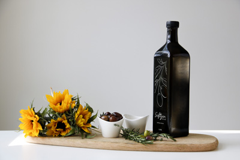

Communications Strategist
Strategist and a researcher with passion to question. Curious about human behaviour, generating insight through curiosity and research, simplifying the pathway from the truth to the idea.
About Me
 After graduating from Law faculty, I decided to study at the faculty of communication and graduated from Istanbul University with a BA in Advertising & PR. Throughout the years, my passion to learn more and advance myself has escalated my curiosity in all of the fields of communication & advertising. Working with many foreign and domestic brands, I have gained experience in various industries and areas from marketing, event planning in building materials industry, strategy in ad agencies to digital communications in non-profit organizations.